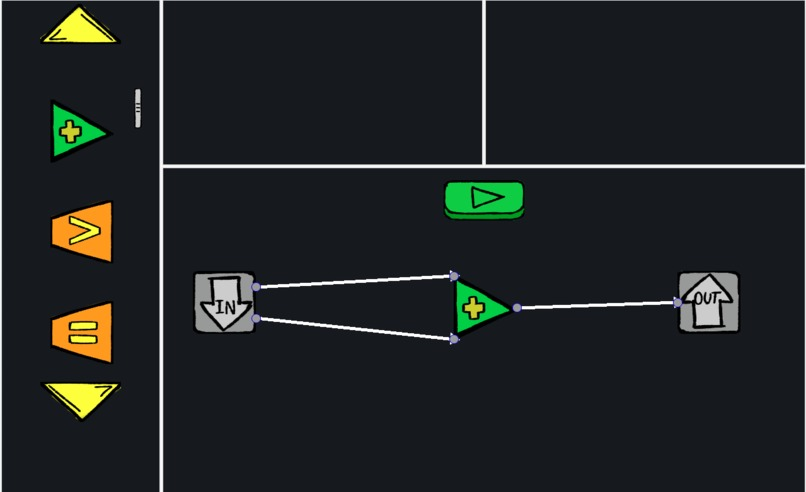
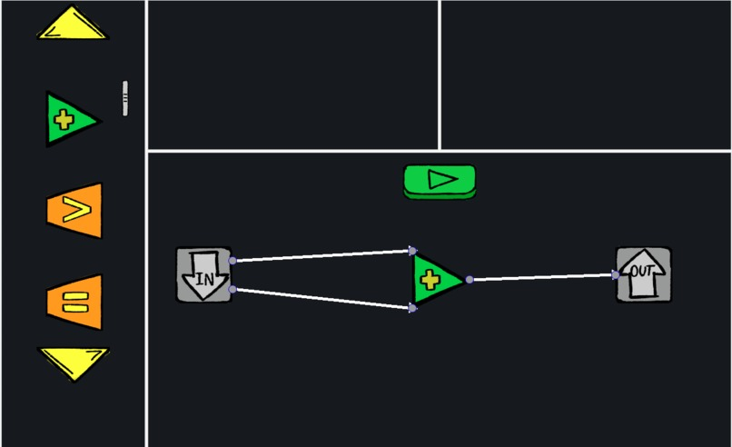
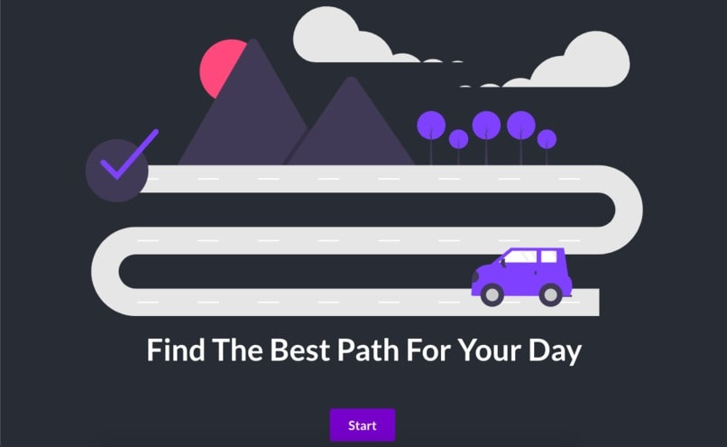
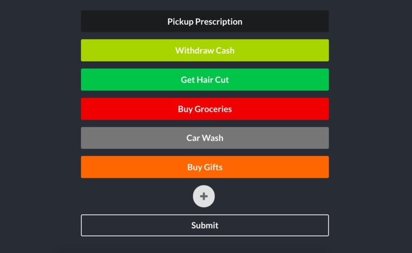
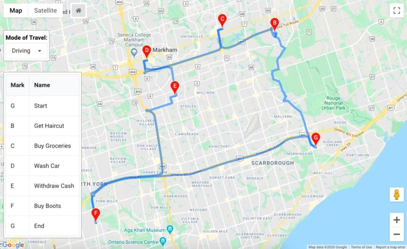
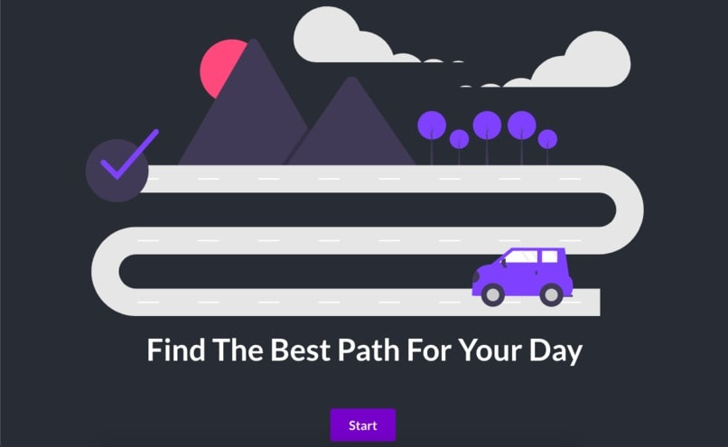
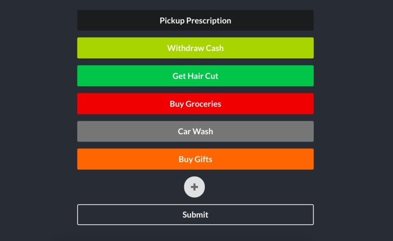
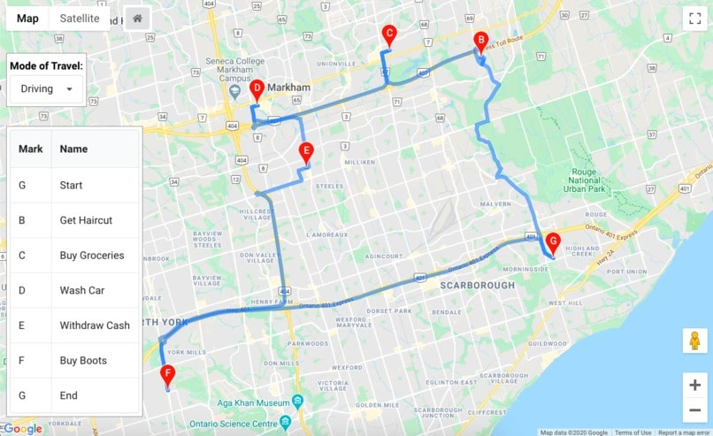

Chronologically Ordered
Chord + Scale Search
Javascript, Python, HTML/CSS
Chord + Scale Search is a small and simple project made to solve
a problem I had with most current chord/scale libraries. I didn't
find any of them quick or simple enough to be anymore valuable than
just figuring out the chord/scale at the piano. For that reason,
this project is designed with simplicity and speed in mind.
Project Link Source Code
Chord + Scale Search is a small and simple project made to solve
a problem I had with most current chord/scale libraries. I didn't
find any of them quick or simple enough to be anymore valuable than
just figuring out the chord/scale at the piano. For that reason,
this project is designed with simplicity and speed in mind.
Project Link Source Code
Lunar Blocks
Python, Pygame, Pygame GUI
Lunar Blocks is a small game designed to introduce young kids to
some basic programming/logic concepts. You connect different "blocks"
together that perform different operations on shapes to pass the level.
An example would be designing a level that determines if the sum of the
size any two shapes is greater than that of a third.
It was built for the online hackathon HackTheU, hosted by the
University of Utah. I worked with 3 others. Although the
hackathon has concluded, this project is still in development.
Hackathon Source Code Devpost

Lunar Blocks is a small game designed to introduce young kids to
some basic programming/logic concepts. You connect different "blocks"
together that perform different operations on shapes to pass the level.
An example would be designing a level that determines if the sum of the
size any two shapes is greater than that of a third.
It was built for the online hackathon HackTheU, hosted by the
University of Utah. I worked with 3 others. Although the
hackathon has concluded, this project is still in development.
Hackathon Source Code Devpost

Plan My Day
Javascript, Python, Flask, ReactJS, Semantic UI, Google Cloud, Google Compute
Plan My Day was a project done at Hack The Valley 4 at the University of Toronto.
I worked with three team members to bring this project to life. The website was
made to take in a list of errands that a user needed to complete
and give them directions for the most efficient way of going about their day.
Source Code Devpost
  
Plan My Day was a project done at Hack The Valley 4 at the University of Toronto.
I worked with three team members to bring this project to life. The website was
made to take in a list of errands that a user needed to complete
and give them directions for the most efficient way of going about their day.
Source Code Devpost
  
Success Stories of New Canadians
Javascript, ReactJS, Gatsby, GraphQL, Netlify, Netlify CMS, ElasticSearch, Git
Success Stories of New Canadians was a project done in
collaboration with a local college professor and two peers.
The website was designed to give the professor a simple and
beautiful way to showcase stories of successful immigrants to Canada,
and let users easily read these stories.
Source Code

Success Stories of New Canadians was a project done in
collaboration with a local college professor and two peers.
The website was designed to give the professor a simple and
beautiful way to showcase stories of successful immigrants to Canada,
and let users easily read these stories.
Source Code
SCD Issue Tracker
Javascript, Python, ReactJS, Flask, Natural Language Processing, Google Cloud,
Bootstrap
'SCD' Issue Tracker was a project done at CuHacking 2020.
It was intended to be a dashboard for social media managers to
see a real-time view of sentiment towards their company on social media
as well allowing admins to track if this sentiment has a correlation
with the status of their system.
Source Code

'SCD' Issue Tracker was a project done at CuHacking 2020.
It was intended to be a dashboard for social media managers to
see a real-time view of sentiment towards their company on social media
as well allowing admins to track if this sentiment has a correlation
with the status of their system.
Source Code